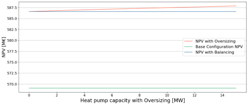
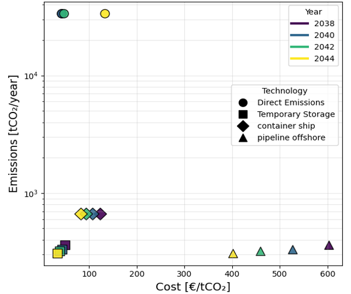

Projects
Mega Heat Pump Economic Optimization
ETH Zürich × Everllence (ex MAN Energy Solutions)
Fall 2024 - Spring 2025
Developed a techno-economic model to evaluate the profitability of large-scale heat pumps participating in electricity balancing markets (FCR). Key Insight: Oversizing the heat pump enables participation in FCR markets, increasing flexibility and improving overall project profitability compared to standard operation.
- Integrated thermodynamic modeling with electricity market participation
- Evaluated system performance across different sizing strategies
- Quantified the value of flexibility and grid services
Tools: Python, Optimization, Thermodynamic Modeling, Energy Markets

CO₂ Transport Resilience
ETH Zürich - Zurich, Switzerland
Fall 2025
Developed a techno-economic optimization framework to evaluate resilience strategies in CO₂ transport networks. Key Insight: Temporary CO₂ storage provides a robust and cost-effective resilience strategy, while alternative transport modes offer flexibility depending on system conditions.
- Modeled multi-modal transport systems (pipeline, truck, rail, ship)
- Integrated carbon pricing and failure scenarios
- Analyzed cost–emission trade-offs
Tools: Python, Optimization, Network Modeling

Industrial Internship
EnergyIntel - Nicosia, Cyprus
Summer 2025

Worked on modeling and optimization of thermal energy storage systems. Key Insight: Fluid selection requires balancing performance, cost, and environmental impact.
- Developed multi-criteria decision models
- Evaluated thermodynamic and environmental performance
- Supported engineering design decisions
Tools: Python, Optimization, MCDA
Heat Pump Optimization
ETH Zürich - Zurich, Switzerland
Spring 2025

Designed and optimized a high-efficiency heat pump system. Key Insight: System efficiency is highly dependent on operating conditions and refrigerant selection.
- Developed thermodynamic performance models
- Analyzed efficiency across operating ranges
- Compared with conventional heating systems
Tools: MATLAB, Thermodynamic Modeling
Household Energy Optimization
ETH Zürich - Zurich, Switzerland
Spring 2025
Developed optimization models for residential energy systems. Key Insight: Optimal scheduling significantly reduces operational cost.
- Used high-resolution time series data
- Optimized appliance operation
- Compared cost and emissions trade-offs
Tools: Python, Optimization
High Temperature Heat Pump
University of Cyprus
2023 – 2024

Designed a heat pump system delivering up to 90°C. Key Insight: Refrigerant selection strongly impacts efficiency.
- Developed full thermodynamic model
- Analyzed refrigerants and pressures
- Optimized system configuration
Tools: MATLAB, Thermodynamics
HVAC Hardware-in-the-Loop Lab
Texas A&M University
Summer 2023

Conducted experimental and simulation-based HVAC analysis. Key Insight: Simulation accuracy varies significantly across conditions.
- Evaluated system performance
- Applied RMSE error analysis
- Compared simulated vs real behavior
Tools: Python, MATLAB